01 · About
A cosine has no meaning without the scale it sits on
An embedding model turns text into a point in a space of several hundred dimensions. Manifold Atlas measures where those points land and what the distances between them mean. It is built for research into how these models encode meaning, not for tuning a retrieval pipeline, so it reports no benchmark scores and offers no relevance metrics.
The first thing it does is work out what its own numbers mean. Embedding spaces are anisotropic: vectors cluster into a cone around a single mean direction rather than spreading over the whole sphere, so two entirely unrelated texts already sit at a high cosine. How high differs sharply by model. Unrelated short sentences sit at 0.12 in All-MiniLM and 0.78 in Snowflake Arctic Embed, so a cosine of 0.80 is a strong reading in the first and a weak one in the second. Every figure in the application is reported against that measured floor.

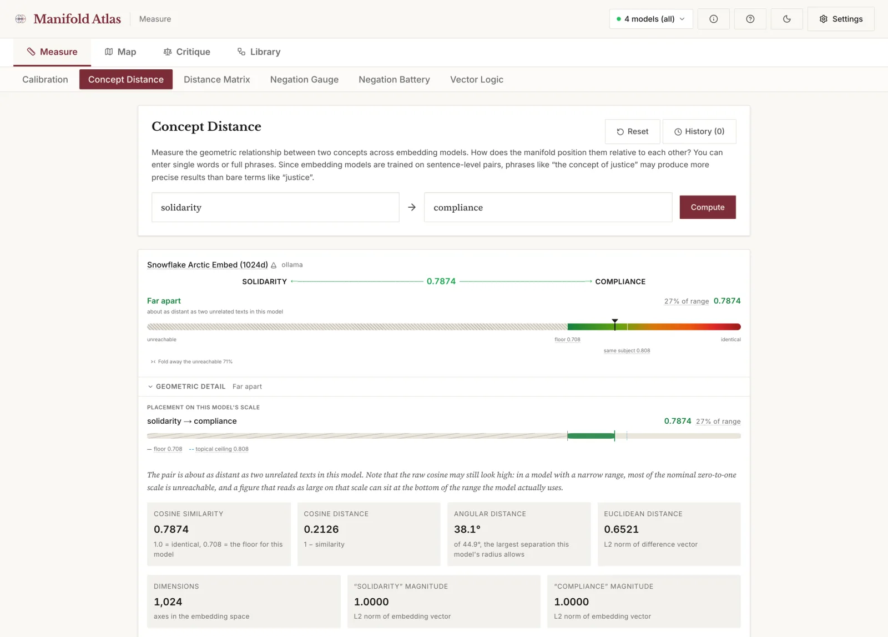
02 · Quick start
Three ways to run it
You need at least one embedding provider. Pick whichever row fits. Nothing here requires a paid account, and the published figures were all produced on the local route.
Ollama
No account, no key, nothing leaves your machine. One environment variable so your browser is allowed to call it. This is what the published figures used.
Set up Ollama →Hugging Face
Free account, free token, seven models. Rate-limited but fully functional for research. The fastest way to see the instrument work without installing anything.
Get a token →OpenAI and others
OpenAI, Voyage, Google Gemini, Cohere, OpenRouter. Embedding calls cost fractions of a penny, but the account needs billing set up before anything works.
Set up a key →You can enable several at once, and most of the interesting results come from doing exactly that. A single provider returns a single geometry, and from inside one geometry there is no way to tell a structural feature of the vectorial regime from an accident of one model's training.
03 · Ollama
Local embeddings, and the one command people miss
Ollama runs embedding models on your own hardware. There is no key and no account, and once the model is resident the latency is single-digit milliseconds. The six models in the published figures all ran this way.
Manifold Atlas calls Ollama directly from your browser rather than through a server, which means the hosted application can use your local Ollama without you installing anything. The catch, and this is where nearly everyone stalls, is that Ollama refuses calls from origins it does not know. You have to tell it which origin to accept.
Using the hosted app with your local Ollama
ollama pull nomic-embed-text
OLLAMA_ORIGINS="https://manifold-atlas.vercel.app,http://localhost:3000,http://127.0.0.1:3000" ollama serveThe Settings panel detects the origin you are actually on and shows this command pre-filled with it, next to a copy button, so there is no need to type it. If a call fails on a CORS preflight, the error panel shows the same command.
Running a local copy instead
git clone https://github.com/vector-lab-tools/manifold-atlas.git
cd manifold-atlas && npm install && npm run dev
ollama pull nomic-embed-text
ollama serveOpen localhost:3000 and enable Ollama in Settings. No CORS configuration is
needed here, because the origins already match.
Making it survive a reboot
On macOS, launchctl setenv OLLAMA_ORIGINS "<origins>" and restart
Ollama. On Linux with systemd, add Environment="OLLAMA_ORIGINS=<origins>"
to the service unit. OLLAMA_ORIGINS=* also works and is more permissive than you
need.
Safari blocks an HTTPS page from calling http://localhost whatever the CORS
headers say. Use Chrome, Firefox, Edge, Arc or Brave with the hosted app. Safari is fine
for a local copy on localhost:3000.
04 · API keys
Hosted providers, and the trap each one sets
Only needed if you want hosted models alongside or instead of local ones. The pattern is the same everywhere: create a key on the provider's site, paste it into Settings, enable the provider, pick models. What differs is how each one fails.
Keys are held in your browser and sent directly to the provider. They are not transmitted
to any Vector Lab server, and there is no account, no login and no telemetry. If you are
running a local copy, keys are also written to .env.local so they survive a dev
server restart. That file is gitignored.
Hugging Face, free, start here
- Create a free account at huggingface.co.
- Go to Settings → Access Tokens.
- Create a token. A Read token is enough. If you are given the fine-grained form instead, enable the permission for calling Inference Providers, or every request comes back unauthorised.
- Copy the token. It begins
hf_and is shown only once. - In Manifold Atlas open Settings, enable Hugging Face, paste the token, and tick the models you want.
A fine-grained token without inference permission looks valid and fails on every call. If a token you just made is rejected immediately, this is almost always why.
The first call to a cold model can take twenty seconds or more while it loads on the provider's side. It is not hung. Later calls are fast.
The free tier is rate-limited, so a run across many concepts can fail partway through. Wait a minute and run it again, or enable fewer models.
OpenAI, Voyage, Google Gemini, Cohere, OpenRouter
| Provider | Models | Where the key comes from |
|---|---|---|
| OpenAI | text-embedding-3-small (1536d), 3-large (3072d) | platform.openai.com, under API keys |
| Voyage AI | voyage-3, voyage-3-large, voyage-3.5 (1024d) | voyageai.com, dashboard |
| Google Gemini | gemini-embedding-001 (3072d) | ai.google.dev |
| Cohere | embed-v3.0 (1024d) | cohere.com, dashboard |
| OpenRouter | various, OpenAI-compatible | openrouter.ai, needs a base URL too |
A new OpenAI account has a valid API key and no credit. Every call fails with a quota error that reads like a rate limit, which sends people looking for the wrong problem. You have to add a payment method and buy credit before an OpenAI key does anything at all. Embeddings are cheap once it works, fractions of a penny for a whole run, but the balance cannot start at zero.
Copy the whole key. Keys are long and double-clicking often grabs only part of one. A truncated key gives an error identical to a wrong key. Use the provider's copy button.
OpenRouter needs two fields. It is configured as an OpenAI-compatible provider, so it takes a base URL alongside the key. Leaving the base URL empty sends the call to OpenAI, which then rejects the OpenRouter key.
Adding models that are not listed
The model registry is plain markdown, one file per provider under
public/models/. Add a line and reload. No rebuild.
model-id | Display Name | dimensions
BAAI/bge-m3 | BGE M3 (1024d) | 102405 · Using it
Calibrate once, then probe
Calibrate
Calibration embeds a neutral corpus of 224 texts and measures how much of the sphere each model actually uses. It runs once per model and is cached. Until a model is calibrated its results are marked as sitting on an unmeasured scale.

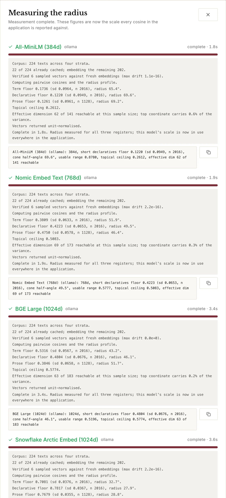
Across six models the usable range runs from 0.878 in All-MiniLM down to 0.218 in Snowflake Arctic Embed, a factor of four. Raw cosines from those two models are not the same measurement and should not be plotted on a shared axis.
Read the radius
The radius is a typical angle between a text and the mean direction of the model's cone. A wider cone is not a better model. It means unrelated texts sit further apart, so the scale has more room in it and a given cosine difference is a smaller proportion of what the space can express.
It is a first-order figure, describing the space as a symmetric cap around one mean direction, which real embedding spaces only approximate. Where a few coordinates dominate, the radius reads too small and the hover card says so. The verdicts and the bars are computed from the floor rather than the radius, so a warned radius does not make a reading unsafe.

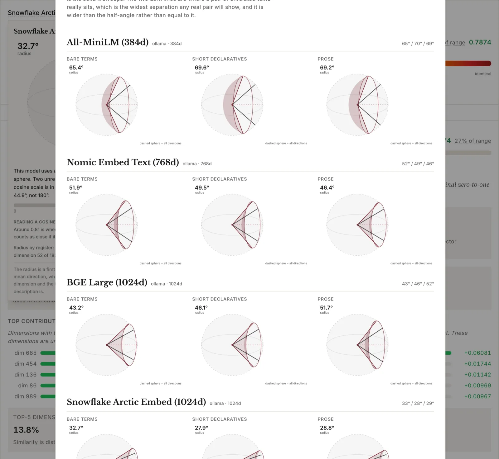

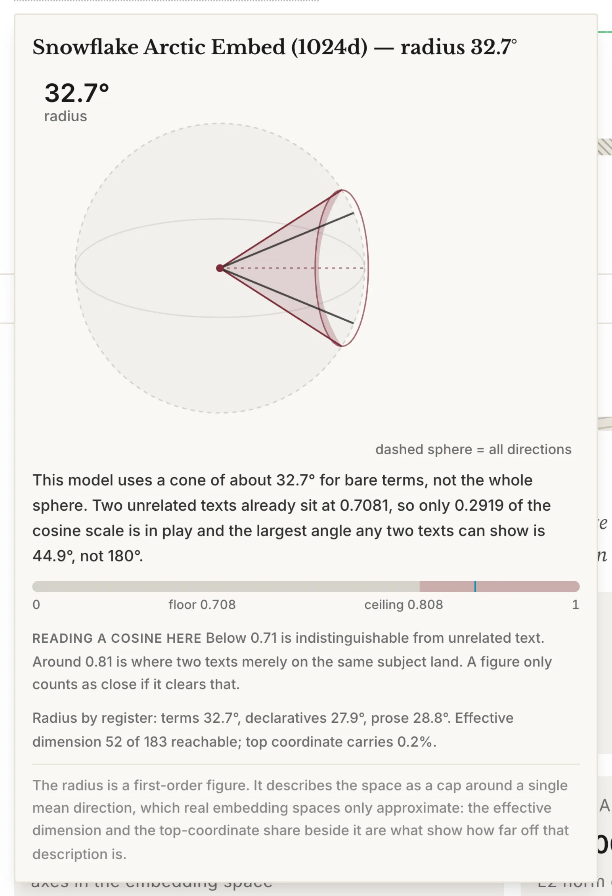
Run a probe
Enter concepts or claims, press the button, read the verdict. Every operation uses the same five phrases, read as positions on the model's own scale: Indistinguishable, Very close, Close, Somewhat apart, Far apart. They describe distance and nothing else. A model that separates two sentences has not thereby understood that one denies the other.
06 · Worked examples
What the instrument is for
Does the model register negation?
Put This law is just against This law is not just. Logic treats a claim and its denial as categorical opposites. The geometry does not.

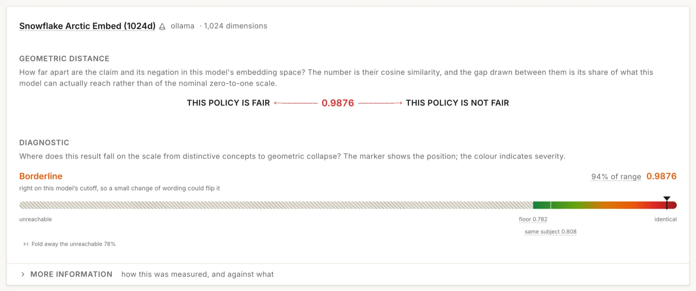
The obvious objection is that the two sentences share almost every token, so of course they sit close. The control answers it.

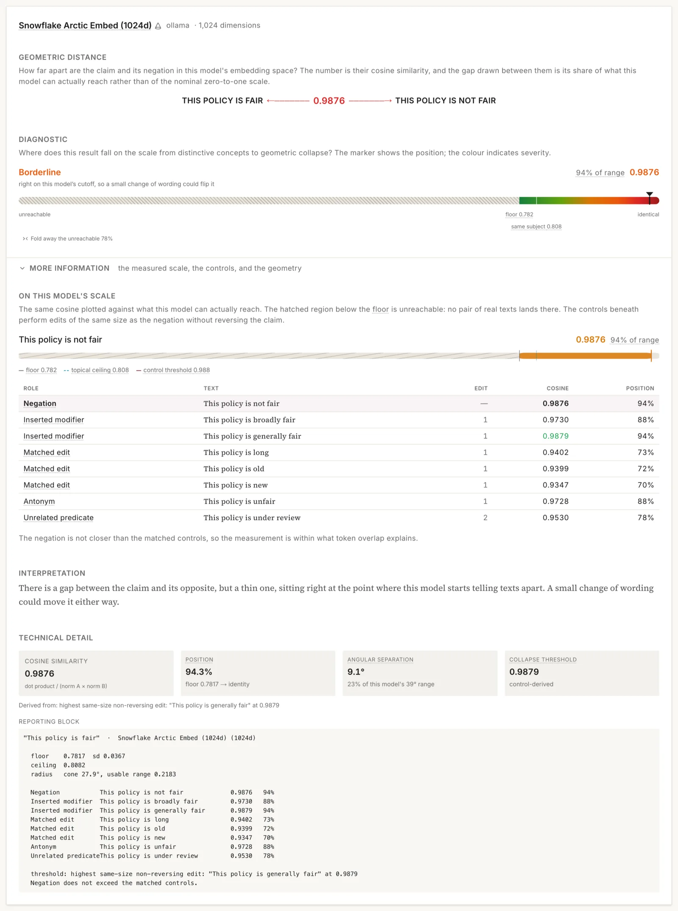
All-MiniLM is the case that settles it. Its floor is 0.12, so it is close to isotropic and the cone cannot be blamed, and it still places the negation at 92% of its range.
How far apart are two contested concepts?

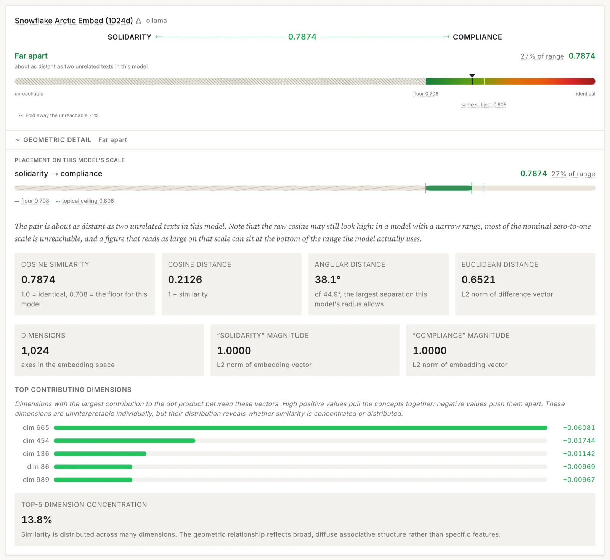
Which concept pairs do models disagree about?

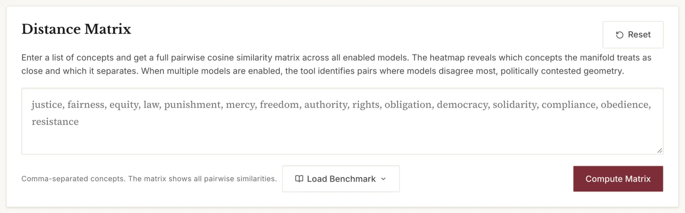
Which ideological framing has the model naturalised?

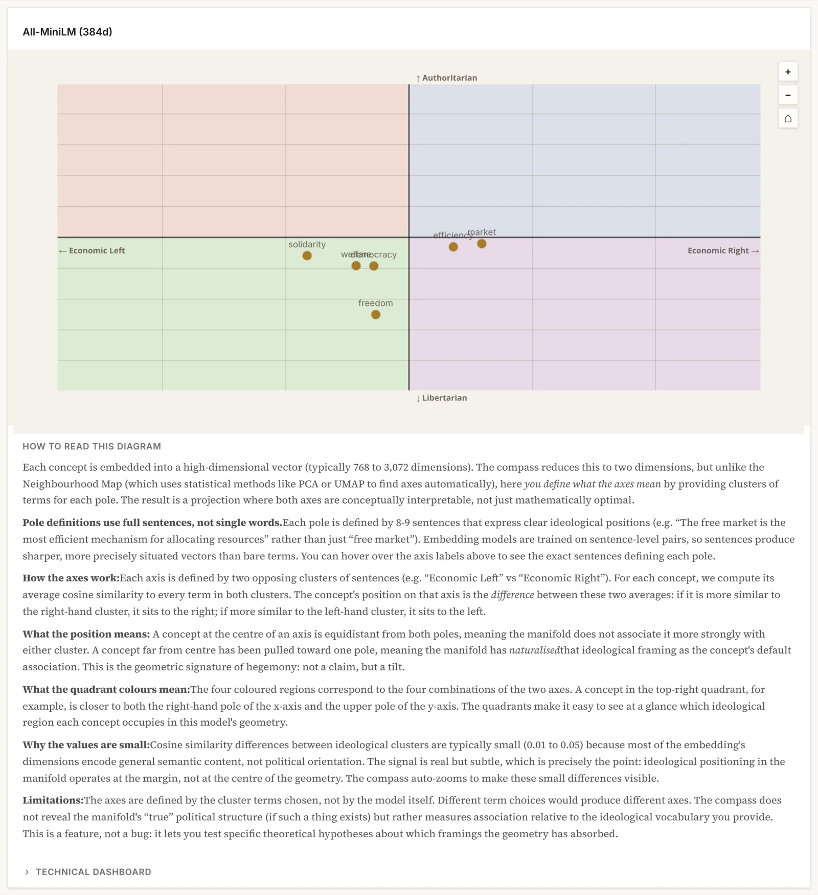
What shape is a set of claims?

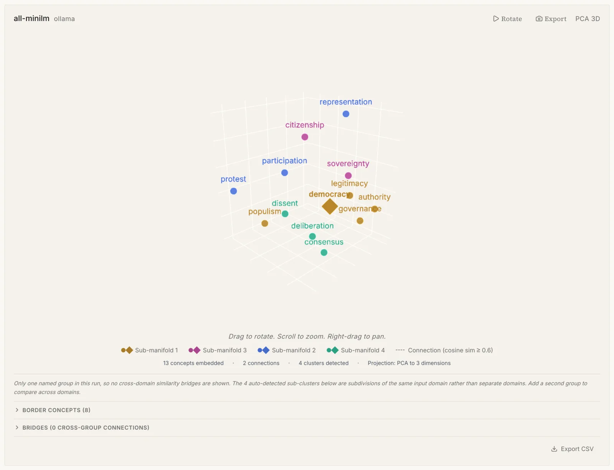

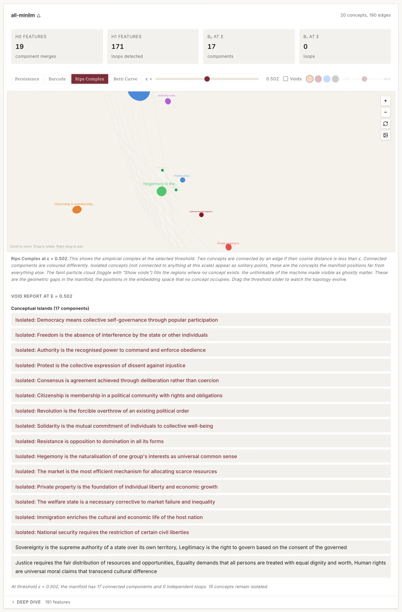
Does a rhetorical opposition hold up geometrically?

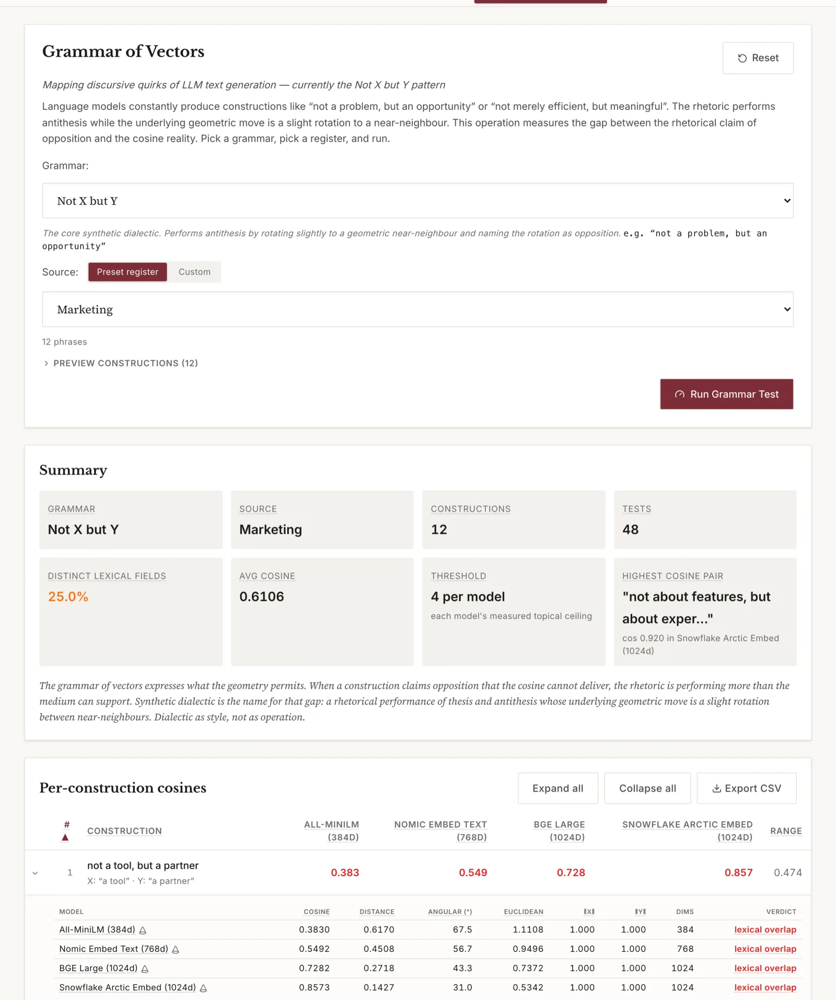
Running a whole protocol

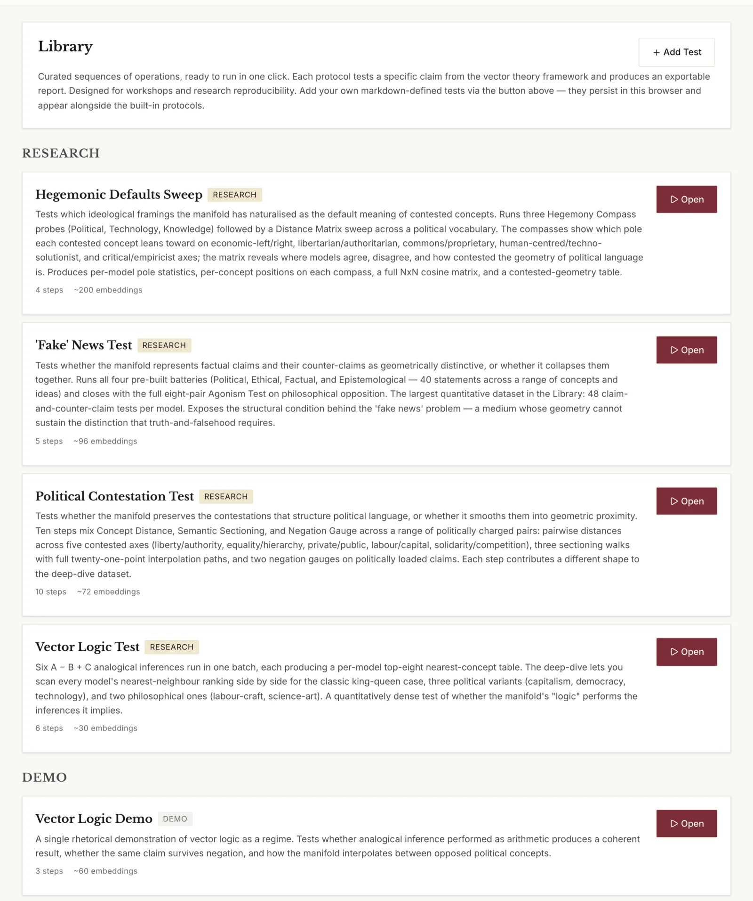
07 · Case studies
Six fields, six batteries
Each field below is a battery of six probes run on the six local Ollama models listed in section 03, against the calibration corpus in the repository. Thirty-six readings per field. Every figure is a normalised position: 0 is the model's floor, where two unrelated texts of the same kind already sit, and 1 is identity. The position travels between models; the raw cosine does not.
Probe and control are matched for edit size and slot, so a difference between them cannot be explained by shared tokens. The Literature battery is the deliberate exception: there the probe is the larger edit, so a win for the probe holds against the edit-size objection rather than depending on it.
An earlier version of this section ran one probe per field. Four of the six conclusions did not survive being run as batteries, and two reversed outright. The single-pair numbers are not reproduced here. This is the same failure the calibration layer exists to prevent, arriving one level up: a single reading is not a measurement.
Replication on hosted models
Every battery was then re-run on six hosted models through the Hugging Face inference router: all-MiniLM-L6-v2, BGE Small, BGE Large, mxbai-embed-large-v1, multilingual-e5-large and Granite 278M multilingual. Twelve model instances in total, two serving routes, same probes and same calibration corpus.
| Battery | Local, 6 models | Hosted, 6 models | Combined |
|---|---|---|---|
| Sociology | 34 of 36 | 32 of 36 | 66 of 72 |
| Media and Communications | 32 of 36 | 31 of 36 | 63 of 72 |
| History | 28 of 36 | 28 of 36 | 56 of 72 |
| Journalism | 27 of 36 | 27 of 36 | 54 of 72 |
| Literature | 27 of 36 | 26 of 36 | 53 of 72 |
| Philosophy | 22 of 36 | 24 of 36 | 46 of 72 |
No battery moves by more than two readings, and Journalism and History land on the same count twice. The figures quoted in each section below are from the local six, because the positions and ranges are theirs; the hosted run is reported here as replication rather than merged into them.
What this rules out is narrower than it looks. The two sets overlap in lineage: MiniLM, BGE, mxbai and Granite appear in both, at different sizes or variants, and only multilingual-e5-large is a family absent from the local set. So this establishes that the results are not artefacts of local quantisation or of one serving route, and does not establish that they hold across genuinely unrelated architectures. Models from a different lineage, and decoder-based embedding models in particular, remain untested.
Sociology · opposition sits closer than unrelatedness
Take a statement, reverse it with one word, and separately change that same word to an unrelated attribute. The job is secure against The job is insecure, and against The job is clerical.
In 34 of 36 readings the reversal is nearer than the unrelated attribute. On She is powerful, the reversal She is powerless sits at 0.60 to 0.77 of range while She is elderly sits at 0.26 to 0.46. Both exceptions fell on The area is rich against coastal, and both were under 0.03.
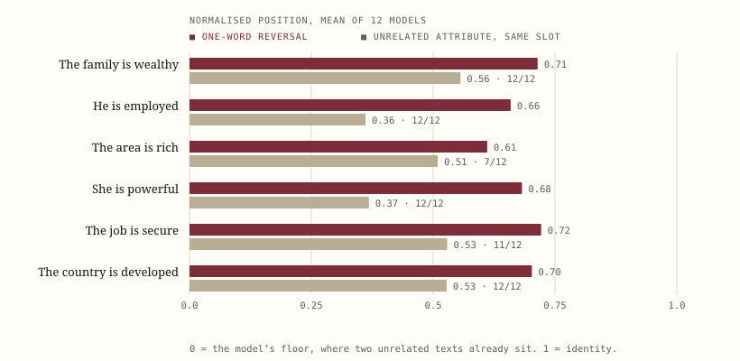
| Statement | Reversal | Unrelated, same slot | Reversal nearer |
|---|---|---|---|
| The family is wealthy | 0.66 – 0.81 | 0.52 – 0.65 | 6 of 6 |
| He is employed | 0.60 – 0.73 | 0.21 – 0.52 | 6 of 6 |
| The area is rich | 0.48 – 0.79 | 0.33 – 0.62 | 4 of 6 |
| She is powerful | 0.60 – 0.77 | 0.26 – 0.46 | 6 of 6 |
| The job is secure | 0.65 – 0.94 | 0.35 – 0.59 | 6 of 6 |
| The country is developed | 0.61 – 0.82 | 0.32 – 0.66 | 6 of 6 |
For work on class, employment or power, establish this before using embedding similarity as a measure. A claim and its reversal are near-neighbours, and nearer than a claim and an unrelated attribute of the same subject. Clustering on these spaces will group a position with its opposite.
Media and Communications · reframings are held apart, with one exception
A term against a neutral near-synonym, and against a loaded reframing of the same referent. Migrant against immigrant and expatriate; government against administration and regime; soldier against serviceman and terrorist.
In 32 of 36 readings the neutral synonym is nearer, so the models do separate the loaded term. Migrant is the cleanest case, 6 of 6: immigrant sits at 0.67 to 0.77 of range, expatriate at 0.23 to 0.45. The class coding that distinguishes a migrant from an expatriate is registered by every model tested.
The exception is protest against riot, the weakest item at 4 of 6. Granite holds riot at 0.156 of range against demonstration at 0.323; All-MiniLM and mxbai place riot nearer protest than demonstration is. A framing analysis of protest coverage is the case where the choice of model changes the answer, which is not true of the battery as a whole.
Journalism · who acts matters less than who it happens to
Hold a sentence and swap one noun. Officers detained the student becomes Guards detained the student, changing who acts, or Officers detained the lawyer, changing who it happens to. Both are one-noun edits, so the comparison is matched.
In 27 of 36 readings the agent swap leaves the sentence nearer the original, meaning the geometry moves less when responsibility changes hands than when the person acted upon changes. On the detention item this is uniform across all six models: the agent swap sits at 0.82 to 0.91 of range, the patient swap at 0.50 to 0.67. The pattern is clearest where the patient swap names a genuinely different party; it reverses on The bank seized the property against the savings, where the two patients are close in sense.
Agent deletion is a separate question and is not matched for length, so it is reported apart from the battery. Police shot the man against The man was shot: all six models register the deletion, but the agent-deleted sentence still sits at 0.62 to 0.84 of range, above 0.83 in granite and Snowflake. Some of that movement is the shorter sentence rather than the missing agent.
History · period register is held apart, weakly and unevenly
The king taxed the peasants against a period restatement, The monarch taxed the serfs, and against a modern equivalent, The government taxed the citizens. Both alternatives change the same two content words.
In 28 of 36 readings the period restatement is nearer, so the models do not generally collapse a historical relation into its modern equivalent. The result does not hold evenly. The king taxed the peasants and The lord owned the land are 6 of 6, but The serf worked the land against The villein worked the demesne is 2 of 6: four models place the modern worker in the factory nearer than the period vocabulary. Where the period term is rare, the distinction the battery is testing for disappears.
Literature · sense beats surface frame about three times in four
A metaphor against a paraphrase of its sense, and against an alternative that keeps the metaphorical frame and changes the sense. The sea is a mirror against The sea is still and reflective and The sea is a danger.
27 of 36 readings favour the paraphrase, and the paraphrase is in every case the larger edit, so the result is not an artefact of edit distance. It is far from uniform. The sea is a mirror is 6 of 6; The mind is a garden is 3 of 6, with half the models placing The mind is a machine nearer than The mind can be cultivated. Where a metaphor is conventional enough to be near-lexicalised, the frame wins.
Philosophy · determinate negation collapses into its term
A term against a near-synonym, and against its determinate negation. Being against existence and nothingness; subject against self and object; essence against nature and appearance.
This is the battery that reverses the single-probe reading. Only 22 of 36 readings place the near-synonym nearer, and two oppositions fail outright. Subject against object is 0 of 6: every model places object nearer subject than self is, by a wide margin in five of them, with object at 0.29 to 0.54 of range against self at 0.16 to 0.40. Essence against appearance is 2 of 6.
The subject item is the most uniform reading anywhere in these batteries. It is 0 of 6 on the hosted models as well, so across all twelve model instances tested, not one places self nearer to subject than object is.
Set beside the Sociology battery, the two results say the same thing from different directions. An opposition that structures a philosophical vocabulary is not held apart by these spaces; it is a near-neighbour relation, and in the subject-object case the nearest one available. Any method that reads conceptual distance off cosine will treat a term and its negation as closely related.
Every number here is reproducible from a clean install. Pull the six models listed in section 03, run Calibration, then enter the probes. No key is needed.
08 · Operations
Seventeen of them
| Operation | What it measures |
|---|---|
| Concept Distance | Geometric relationship between two concepts, across models |
| Distance Matrix | Full pairwise matrix, pairs ranked by cross-model disagreement |
| Negation Gauge | A claim against its negation, with matched-edit controls |
| Negation Battery | The same across a themed set of ten claims |
| Neighbourhood Map | Local structure, 3D projection, cluster and bridge detection |
| Semantic Sectioning | Interpolation between anchors, naming the nearest real concept at each step |
| Vector Walk | Traversal of the space between concepts |
| Vector Drift | How far context displaces a concept from its bare position |
| Hegemony Compass | Position between two ideological axes defined by sentence clusters |
| Agonism Test | Whether philosophical opposition survives geometrisation |
| Real Abstraction Test | Use-value against exchange-value descriptions of the same thing |
| Vector Logic | Analogical inference as arithmetic, A − B + C |
| Silence Detector | How much geometric room one domain gets against another |
| Grammar of Vectors | The "Not X but Y" family against the geometry it claims |
| Text Vectorisation | Reading path and word-frequency analysis over a text |
| Persistent Homology | Persistence diagram, barcode, Rips complex, Betti curve, voids |
| Calibration | Per-register floors, radius profile, control-derived thresholds |
09 · Troubleshooting
Symptom to cause
| Symptom | Cause and fix |
|---|---|
| Ollama enabled but nothing responds | Origin not in OLLAMA_ORIGINS. Copy the command from Settings. |
| Ollama works locally, not on the hosted app | Same cause, or you are in Safari, which blocks HTTPS pages calling localhost. |
| OpenAI key valid, every call fails on quota | No credit on the account. Add a payment method and buy credit. |
| Hugging Face token rejected immediately | Fine-grained token without inference permission. Make a Read token instead. |
| First Hugging Face call hangs for ~20s | Cold model loading on the provider's side. Wait; later calls are fast. |
| Errors partway through a long run | Free-tier rate limit. Wait a minute, or enable fewer models. |
| OpenRouter key rejected | Base URL field left empty, so the call went to OpenAI. |
| A result says it is on an unmeasured scale | That model has not been calibrated yet. Run Calibration. |
| Cosines look high for unrelated texts | Expected. That is anisotropy, and it is what the floor measures. |
If it is not on this page, open an issue on the tool's repository to report the problem. If you have a fix, a pull request is welcome.
10 · FAQ
Questions that come up
I just want to try it. What is the fastest route that needs no key at all?
Install Ollama, run ollama pull nomic-embed-text, then start it with the
origin of the page you are on allowed. That last part is the step nearly everyone misses:
Ollama refuses calls from origins it does not know, so starting it plainly with
ollama serve leaves the browser unable to reach it. The Settings panel detects
the origin you are actually on and shows the full command pre-filled, with a copy button.
Ollama is installed and running, but Manifold Atlas sees nothing.
The origin is not in OLLAMA_ORIGINS. This is the single most common failure
and it looks like the tool is broken rather than like a configuration problem, because the
request fails on a CORS preflight before Ollama logs anything. Copy the command from Settings
and restart Ollama with it. To make it survive a reboot, set the variable at the system level
rather than on one shell: launchctl setenv on macOS, an
Environment= line in the service unit on Linux with systemd.
It works on my local copy but not on the hosted app.
Either the hosted origin is missing from OLLAMA_ORIGINS, or you are in Safari.
Safari blocks an HTTPS page from calling http://localhost whatever the CORS
headers say, so no amount of configuration will fix it there. Use Chrome, Firefox, Edge, Arc
or Brave with the hosted app. Safari is fine against a local copy on
localhost:3000, where both sides are on the same origin.
Which Ollama models should I pull?
Pull three, and choose them so their floors are far apart. The floor is where two unrelated texts of the same kind already sit in a model, and it is the thing that differs most between models. Three models with similar floors tell you much less than three that span the range, because agreement between near-identical geometries is not evidence of anything.
| Model | Download | Floor, terms | Floor, sentences | Why this one |
|---|---|---|---|---|
all-minilm | 44 MB | 0.174 | 0.122 | Lowest floor, close to isotropic. Separates most clearly, and the case where a high reading cannot be blamed on the cone. |
nomic-embed-text | 262 MB | 0.381 | 0.422 | Mid floor. The sensible default if you only pull one. |
snowflake-arctic-embed | 638 MB | 0.708 | 0.782 | Highest floor measured here. On sentences, unrelated texts already sit at 0.78, so it shows plainly why a raw cosine means nothing on its own. |
That is 944 MB for a set spanning floors from 0.12 to 0.78. If disk is tight, pull
all-minilm and granite-embedding: 104 MB together, floors 0.12 and
0.57, still a usable spread. The other two of the six used in section 07,
bge-large and mxbai-embed-large, are 639 MB each and sit at 0.48 and
0.40, close enough to nomic-embed-text that they add size more than information
unless you want the full comparison.
Chat models do not work. Ollama's /api/embed rejects them, so pulling Gemma or
Llama for this will fail; embeddinggemma is the Gemma-family embedding model.
Every floor above was measured on these models with the calibration corpus in the repository,
not taken from a model card.
If I do want a hosted provider, which one should I start with?
Hugging Face. The account and the token are free, it covers seven models, and it needs no payment method. When you create the token, a Read token is enough. If you are given the fine-grained form instead, you must enable the permission for calling Inference Providers, or every request comes back unauthorised.
My key is definitely correct and every call still fails.
Four causes account for almost all of these, and each produces an error that points at the wrong thing:
- OpenAI, no credit. A new account has a valid key and a zero balance. Every call fails with a quota error that reads like a rate limit. Add a payment method and buy credit. Embeddings cost fractions of a penny for a whole run, but the balance cannot start at zero.
- Hugging Face, wrong token type. A fine-grained token without inference permission looks valid and fails on everything. If a token you just made is rejected immediately, this is almost always why.
- A truncated key. Keys are long and double-clicking often grabs only part of one. A partial key gives an error identical to a wrong key. Use the provider's copy button.
- OpenRouter with an empty base URL. It is configured as an OpenAI-compatible provider and takes a base URL alongside the key. Leave that field empty and the call goes to OpenAI, which then rejects an OpenRouter key.
My university runs its own AI gateway. Can I use that instead of a commercial key?
Yes, if it serves embeddings. The option is in Settings under OpenAI-Compatible (OpenRouter), which is where an institutional endpoint goes despite the name: OpenRouter is one example of an OpenAI-compatible API rather than the only thing that provider talks to. It is the one place in the tool that takes a base URL you type in yourself.
Choose that provider, set the Base URL to your endpoint, which should end at
/v1, and paste the key your institution issued. If your university runs a gateway
at https://ai.example.edu/v1, that is the Base URL. Then type the model id the
gateway exposes, by hand: it will not appear in the dropdown, because the tool has no way to
know what your institution has deployed. Any server speaking the OpenAI API works this way,
including a vLLM or LiteLLM proxy or a departmental gateway.
Two things differ from the chat tools in this family. The endpoint must serve
/v1/embeddings, not /v1/chat/completions, and many gateways expose
only chat. And the model id must be an embedding model, for example
text-embedding-3-small, or bge-m3 on a vLLM server. If the gateway
answers chat but not embeddings, nothing here will work against it and the local Ollama route
is the better option.
The first Hugging Face call takes twenty seconds. Is it stuck?
No. The model is loading on the provider's side. Later calls are fast. Separately, the free tier is rate-limited, so a run across many concepts can fail partway through; wait a minute and run it again, or enable fewer models.
The model I want is not in the list.
The registry is plain markdown, one file per provider under public/models/,
in the form model-id | Display Name | dimensions. Add a line and reload. There is
no rebuild step.
Do I need to pay for anything?
No. Ollama runs on your own hardware with no account and no key, and every figure published from this instrument was produced that way across six local models. Hugging Face gives a free token that works for research, rate-limited but functional. The paid providers are there for coverage, not because the tool needs them.
Does my text leave my machine?
With Ollama, no. With a hosted provider, the texts you probe are sent to that provider, the same as any other API call you would make to them. Keys are held in your browser and sent straight to the provider; they do not pass through any server belonging to this project. If you are probing material you cannot send to a third party, use Ollama.
Why do two models give different numbers for the same pair?
Because each model's space is anisotropic to a different degree. Vectors cluster into a cone around a mean direction rather than spreading over the sphere, so two unrelated texts already sit at a high cosine before any relationship is measured. Unrelated short sentences sit at 0.12 in All-MiniLM and 0.78 in Snowflake Arctic Embed. The raw cosines are not comparable across models; the position within each model's measured range is.
Does a cosine of 0.80 mean the texts are 80% similar?
No, and in most models it does not even mean they are related. Read it against that model's floor. A cosine of 0.80 sits well above the floor in All-MiniLM and below it in Snowflake Arctic Embed, where it would indicate two texts the model cannot tell apart.
Which model should I use?
More than one. A single provider returns a single geometry, and from inside one geometry there is no way to separate a structural feature of the vectorial regime from an accident of one model's training data. Where models disagree, the disagreement is the result.
Does this read the model's internal states?
No. Embedding APIs return processed representations, not the internal vectors of a model mid-computation. What is measured here is the geometry of the output space. To open a model's weights, attention patterns and hidden states, use Vectorscope.
How does this differ from the other Vector Lab tools?
Manifold Atlas compares the geometry of several embedding spaces against each other. Vectorscope opens a single open-weight model locally and makes its internals visible. Manifoldscope works one manifold in depth. Theoryscope works over a corpus of theoretical texts.
Can I add my own concepts and tests?
Yes. Protocols are markdown with a short header, and ones you write persist in the browser alongside the built-in library. Negation batteries can be defined and saved by name, then referenced from a protocol step.
Can I rely on a number I ran last week?
Embeddings are cached in the browser and each cached vector records the pipeline that produced it, so vectors of unknown provenance are not silently mixed with fresh ones. Before a calibration becomes a measurement, a sample is re-embedded and checked against the cache. A result that was produced on an uncalibrated model says so on its face.
Does it work offline?
With Ollama, yes, once the model has been pulled. Hosted providers need a connection.
When was this made, and by whom?
The first commit is dated 28 March 2026, and v0.1 went up the same day: three operations, six providers, and a cosine read against stipulated bands. Version 1.0.0, on 22 April 2026, is where it stopped being a prototype. The work is by David M. Berry at the University of Sussex, written with Claude Code, and the instrument exists to test claims made in Vector Theory.
Built at Copenhagen Business School, Denmark, during an Otto Mønsted Visiting Professorship in 2026. The support of the Otto Mønsted Fond (grant 25-12-1849) is gratefully acknowledged.
The change that matters most came in August 2026. Until then every reading was scored against fixed bands, so a cosine of 0.80 was called the same thing in every model. Versions 1.9.0 to 1.11.0, across 8 and 9 August, replaced that with the calibration layer: each model's floor is measured before anything is probed, and every figure since is reported against that model's own scale. It changed every number the tool had ever produced.
Two other things are worth knowing. The repository moved from a personal account to the
vector-lab-tools organisation in April 2026,
so old dmberry/manifold-atlas links still redirect. And on 9 August 2026 the
licence changed from MIT to GPL-3.0-or-later, retroactively covering every prior version;
copies already obtained under MIT stay validly licensed under those terms.
As of 12 November 2026: 243 commits, 38 released versions, seventeen operations, currently v1.19.5. Archived on Zenodo under 10.5281/zenodo.23762832.
Source on GitHub →
Release history →
Commit log →
The Vector Lab organisation →
If it is not on this page, open an issue on the tool's repository to report the problem. If you have a fix, a pull request is welcome.
11 · Citing
Reference and licence
The theoretical framework is set out in Berry, D. M. (2026) 'Vector Theory: Epistemology, Political Economy, and Probabilistic Computation', Philosophy & Technology 39(3), 149. doi:10.1007/s13347-026-01162-w.

Every release of the software is archived on Zenodo. Cite the concept DOI, which always resolves to the most recent version:
Berry, D. M. (2026) Manifold Atlas: comparative geometry of AI vector spaces. Zenodo. doi:10.5281/zenodo.23762832
To cite one release rather than the project, use that release's own version DOI, listed on
the Zenodo record. Machine-readable
metadata is in CITATION.cff in the repository.
Manifold Atlas is released under the GNU General Public License, version 3 or later. Versions up to 1.17.2 were released under the MIT Licence; the relicensing covers every prior version, and copies already obtained under MIT remain validly licensed under those terms.